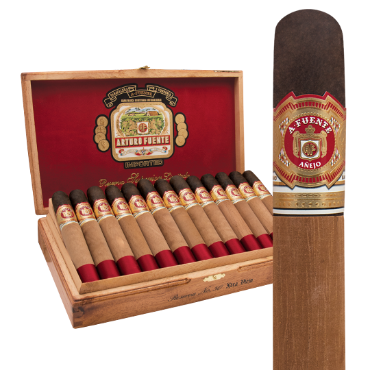

When you get right down to it, the Bourbon Old Fashioned is little more than a slug of whiskey, seasoned and sweetened. Yet for all of its suave simplicity, the drink remains as relevant today as it was when it first captured drinkers hearts 200 years ago.
The Arturo Fuente Anejo. They are prized and praised by all who have had the good fortune of smoking one. Anejo cigars are rolled to perfection with only the finest aged Dominican tobaccos beneath exceptionally rich Connecticut Broadleaf wrappers patiently aged in Cognac barrels. Anejo bears a flavor and depth unlike any other cigar on the market. Anejos are only available in obscenely limited quantities. Treat yourself to one of the finest and rarest cigars ever rolled!
